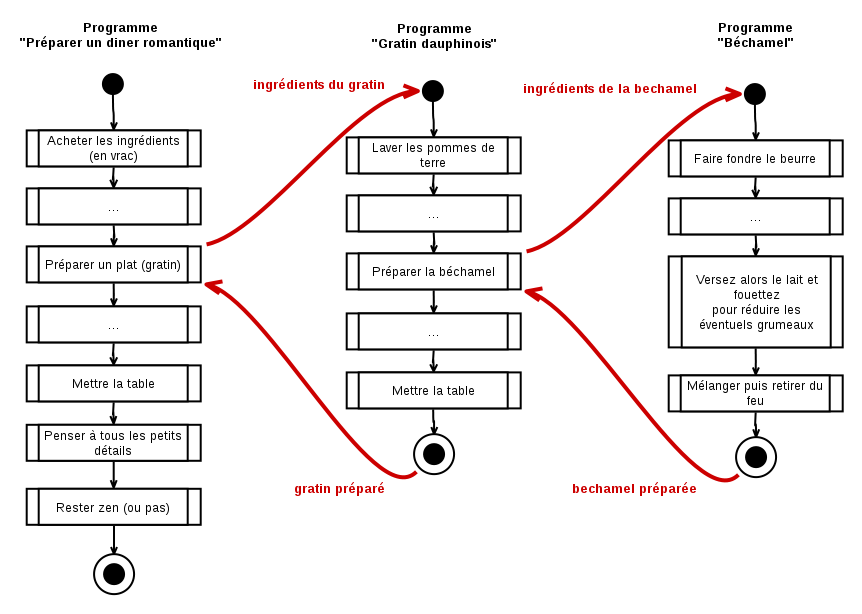
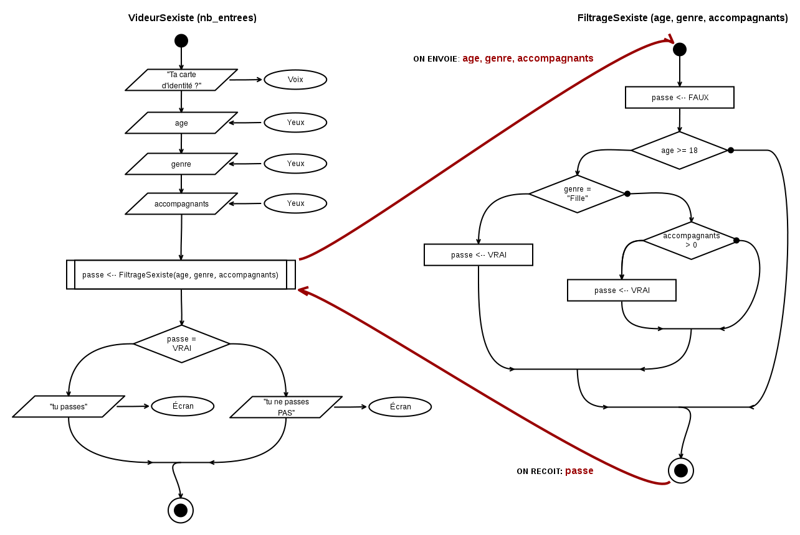

Algorigrammes (partie 5)#
Super ! Quelle motivation ! Trop bien !
Ok, cette fois on passe aux choses sérieuses ! La dernière fois je te disais vouloir commencer du vrai code dans ce chapitre mais là je me rends compte qu'il nous manque encore une notion super importante avant de continuer... donc ça sera pour la prochaine fois ! Suspense :-)
Tu as remarqué que nos algorigrammes prennent beaucoup d'espace à dessiner ? Juste avec deux ou trois conditions, ça devient déjà le bazar à lire et à écrire ! Je vais donc te montrer un truc pour simplifier tout ça.
Sous-programmes, fonctions et procédures#
La métaphore de la recette (encore !)#
Il y a quelques pages, nous avions défini un programme comme un ensemble d'ingrédients et d'étapes nécessaires pour réaliser un objectif. Un peu comme une recette de cuisine finalement.
Avec cette définition, nous pouvons dire qu'un sous-programme est une deuxième recette de cuisine, mentionnée dans la première recette et dont le résultat est utilisé par la première recette.
Exemple 7.1. Le gratin et la béchamel#
Voyons les deux recettes suivantes : d'abord la béchamel...
Recette de la béchamel ====================== Ingrédients (pour 4 personnes) : 40 g de beurre, 40 g de farine, 1/2 L de lait, 1 pincée de muscade râpée, sel, poivre. Préparation : 1. Dans une casserole sur feu vif, faites fondre le beurre jusqu'à ce qu'il soit mousseux. 2. Versez d'un coup la farine et mélangez vivement avec une spatule en bois, jusqu'à ce que le mélange soit homogène et commence à dorer légèrement. 3. Versez alors le lait et fouettez pour détruire les éventuels grumeaux. Baissez le feu et continuez de mélanger en continu jusqu'à ce que la béchamel épaississe. 4. Salez, poivrez, ajoutez la noix de muscade. Mélangez puis retirez du feu.
En supposant toutes les actions correctement menées, on peut dire que cette recette produit un résultat : la béchamel (sans blague !) et ce résultat dépend uniquement des ingrédients de départ.
C'est ok jusque là ? On continue avec l'autre recette :
Recette du gratin dauphinois ============================ Ingrédients (pour 4 personnes) : 1 kg de pommes de terre, 60 g de beurre, 40 g de farine, 150 g de fromage râpé, 1/2 L de lait, 1 pincée de muscade râpée, sel, poivre. 1. Lavez et pelez les pommes de terre. Plongez-les dans un grand volume d'eau froide et portez à ébullition. Cuisez 15 à 20 min. 2. Pendant ce temps, réalisez la béchamel. 3. Préchauffez votre four à 200°C (th.6-7). Lorsqu'elles sont cuites, égouttez les pommes de terre et coupez les en rondelles d'environ 5 mm d'épaisseur. Répartissez-les dans le plat en salant et poivrant régulièrement. Versez dessus la béchamel et lissez-la de façon à ce qu'elle se répartisse partout. 4 Parsemez le fromage râpé, et enfournez pour 20 min. Servez bien chaud, décoré de brins de persil et accompagné d'une grosse salade verte.
La recette du gratin est plus intéressante que la précédente. On peut y noter que :
- Cette recette produit un résultat : la gratin dauphinois. Ce résultat intègre de la béchamel.
- On a supposé connu l'action
réaliser la béchamelà l'étape n°2 - Cette recette dépend des ingrédients de départ
- Cette recette dépend également de la transformation d'une partie des ingrédients par la recette de la béchamel
Recettes et première approximation#
Si nous étions entrain de cuisiner en suivant minutieusement un livre de recettes, au moment de l'instruction réaliser la béchamel nous aurions tourné
quelques pages de notre livre pour aller à la recette ̀Béchamel.
À partir de là nous aurions suivi les ingrédients et les instructions de cette nouvelle page comme s'il s'agissait de notre recette principale.
On peut en déduire que :
- "Recette de la Béchamel" est un sous-programme du programme principal "Gratin"
- Il suffit de fournir les bons ingrédients à la recette de la béchamel (types & quantités) pour réaliser une béchamel
- Elle peut être utilisée indépendamment de la recette du du gratin, pour réaliser d'autres recettes (ex: pour faire des aubergines façon "papoutsakia") !
L'instruction "sous-programme"#
Dans un algorigramme, un instruction rectangulaire avec deux barres de chaque coté représente l'utilisation d'un sous-programme :
- À l'arrivée dans une instruction double-barrée, on "saute" dans le sous-programme concerné
- .. on suit les flèches et on exécute ce qui doit etre exécuté
- ...jusqu'à terminer le sous-programme
- ...ce qui nous amène à l'instruction que l'on avait quittée dans le programme principal !
Exemple 7.2. L'algorigramme du dîner romantique#
On peut décrire la préparation d'un dîner comme un programme avec des instructions où chacune de ces instructions correspond en fait à un sous-programme ! Il suffit de zoomer... pour découvrir d'autres instructions, et ainsi de suite.

Vocabulaire et définitions#
Dans le monde du développement, il finalement est assez rare de parler de sous-programmes, on parlera plutôt de fonctions ou de procédures. Même s'il est fréquent de confondre les deux.
- Une fonction fabrique un résultat qui sera utilisée par le programme principal
- Une procédure ne produit pas de résultat mais réalise des actions à effet de bord (ex: afficher une fenêtre, envoyer des données sur le réseau, etc.)
Dans ces sous-programmes, il faut distinguer deux moments importants : leur déclaration et leur appel .
-
La déclaration ou la définition d'un programme, c'est quand on écrit — ou qu'on dessine — les instructions qui le composent.
-
L'appel , c'est lorsqu'on fait référence à un programme existant à partir d'un autre, pour l'utiliser.
On ne peut appeller un sous-programme que s'il a été préalablement défini — évidemment !
On parlera désormais de programme appelant (le programme principal) et de programme appelé (le sous-programme), puisqu'un sous-programme peut lui-même appeler un autre sous-sous-programme.
Utilisation et fonctionnement#
Que se passe-t-il lorsqu'un programme appelle un sous-programme ? En fait il y a 3 moments clés :
- Passage de paramètres : certaines données du programme appelant sont transférées au sous-programme appelé (ex: dans notre recette principale, on envoie une partie des ingrédients à la préparation de la sous-recette)
- Réalisation des étapes (ex: c'est la préparation de la sous-recette)
- La valeur de retour : lorsque la préparation est terminée c'est le résultat qui est transféré vers le programme appelant (ex: la béchamel, produite par la recette)
C'est important de noter ces trois moments car les deux programmes (appelant et appelé) vivent dans des espaces mémoires différents. Ils ne peuvent communiquer qu'au tout début et à la toute fin.
Faisons un parallèle science-fictionnesque : c'est comme si les deux programmes étaient des mondes parallèles : il pourrait y avoir une variable nommée age dans chacun de ces deux mondes, mais ces deux variables age ne désigneront pas la même case mémoire, elle n'auront pas la même vie (puisqu'elle suivront des programmes différents) et n'auront donc pas forcément les mêmes valeurs.
Du coup, pour communiquer entre ces deux programmes (appelant & appelé), il faut ouvrir une une brèche, mais elle ne dure pas longtemps !
Alors un coup on ouvre la brèche et on envoie des choses (les paramètres) puis celle-ci se referme. Il n'y a plus aucun moyen de savoir ce qui se passe de l'autre coté ! Enfin la brèche s'ouvre à nouveau et on reçoit (le résultat).
Note
Pourquoi on fait tout ça ? Haha... patience ! C'est à cause du fonctionnement des processeurs et de la mémoire ! On reviendra là dessus un peu plus tard, en parlant des fonctions, de la pile et du tas ! :-)
Exemple 7.3 : Videur sexiste, mais « 2.0 »#
Pour appliquer tout ce qu'on vient de dire, on pourrait ré-écrire l'algorigramme du videur sexiste en séparant le traitement du client qui se présente de l'algorithme de décision (sexiste ou non) du videur :

Il venait de se passer tant de choses bizarres, qu'elle en arrivait à penser que fort peu de choses étaient vraiment impossibles
Lewis Caroll, Alice au pays des merveilles
À suivre ?#
Ça y est, nous avons fini les algorigrammes ! Et nous avons également fini l'essentiel de la partie théorique ! Les subtilités qui restent concernent l'écriture du code, les types de variables et les structures de données.
Il reste donc à voir comment on fait tout ça "en vrai" ! Donc la prochaine fois... on reprends les exercices !
- Tu en penses quoi jusque là ?
- Si tu étais un personnage de SF, qui serais-tu ? (dans quel roman / film ?)
- Tu veux la suite ?
Si oui, envoie un e-mail et demande tu-sais-quoi à tu-sais-qui :-)